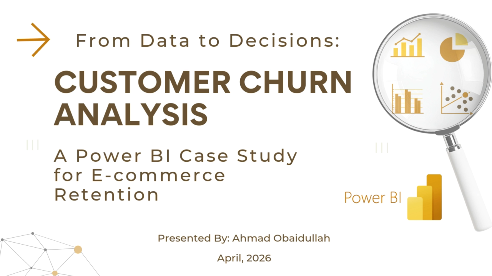

Home / Projects / Case study 01
Case study 01 · Independent projectCustomer Churn Analysis: From 541,909 Transactions to a Retention Battle Plan
End-to-end self-directed project (Python → Power BI) answering a real retail question: who is about to leave, and what should marketing do about it?
0
customers analyzed
0
churn rate identified
0
zero-churn loyal customers found
27% → 80%
of customers → share of revenue
The problem
"Which customers are most likely to stop buying, and what can we do to retain them?"
— The Head of Customer Experience, opening brief
The marketing team needed a decision-ready tool to find at-risk segments and design targeted retention campaigns — not another generic sales chart.
What I did
- Cleaned 541,909 raw transactions in Python (Pandas): 25% missing CustomerIDs, negative quantities (returns/cancellations), inconsistent product descriptions.
- Engineered customer-level features: RFM (Recency, Frequency, Monetary), a churn definition of 90+ days of inactivity, and product categories.
- Built a three-page Power BI dashboard with DAX measures: churn rate, high-value customers (top 20% by spend), loyal RFM-444 segment, Pareto revenue concentration, and a Customer List page with one-click drillthrough to individual customer details.
The impact
- The churn hotspot is quantified: customers with <$500 spend and >90 days of inactivity represent ≈60% of all churned customers → the first re-engagement target.
- Counter-intuitive finding: customers with 2+ returns churn at ~20% vs ~40% for those with none — returns signal engagement, not dissatisfaction.
- The Garden category churns ~30% faster than Home → seasonal discount campaigns; a post-holiday January churn spike → proactive January campaigns.
- Revenue concentration is healthier than the classic 80/20 rule: 1,165 customers (27%) generate 80% of revenue — and 496 customers with a perfect RFM 444 score and 0% churn are the most valuable segment to protect.
- Marketing can isolate at-risk profiles and personalize retention offers through filters and drillthrough.
Watch the full presentation

▶Full walkthrough — from raw data to decision-ready dashboard. Click to load the video (nothing autoplays).
From the script
The opening
"I began with raw transactional data in Python. Using a Jupyter notebook, I cleaned missing values, handled returns and cancellations, and engineered RFM features — turning messy data into a clean customer-level table."
The headline number
"The Executive Overview shows a 33% churn rate across 4,372 customers — but we need to dig deeper."
The surprise insight
"Customers with 2+ returns actually churn less — around twenty percent — than those with no returns, who churn at about forty percent. Returns can signal engagement, not dissatisfaction."
The Pareto finding
"The red line at 80% shows that 1,165 customers — just 27% of our base — generate 80% of revenue… a slightly more distributed and healthier base than the classic 80/20 rule."
The personalization close
"One click drills into a dedicated Customer Details page… This enables truly personalized retention offers — not just generic campaigns."
Who is at risk, and why
"Customers inactive for over 90 days, with low spend (<$500), and from the Garden category — especially those with no returns, because returns actually indicate engagement. This dashboard pinpoints exactly who to target and why."
Python (Pandas)Jupyter NotebookPower BI (DAX, Pareto, drillthrough)Excel